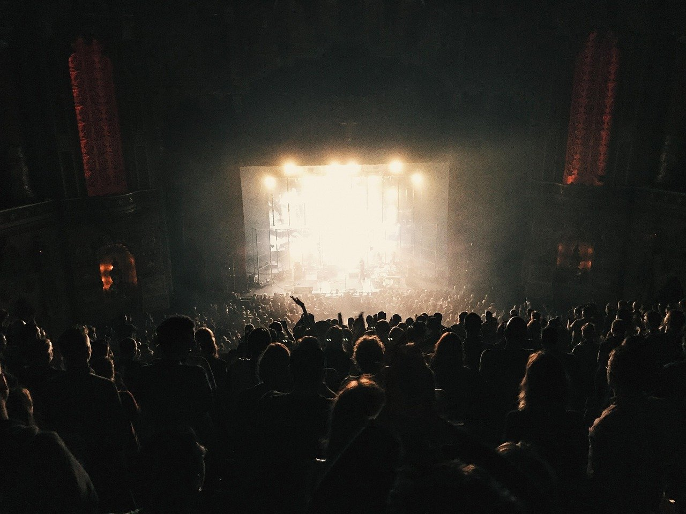

가오슝 BTS 콘서트 숙소, 국가체육장 가려면 어디에 묵을까?
타이베이 공연으로 잘못 알고 숙소를 잡지 않도록 — 공연 장소와 날짜, 이동 동선을 먼저 확인하세요.
게시
"BTS 대만 공연이 타이베이라던데 숙소를 어디로 잡죠?" 가오슝 BTS 콘서트 숙소부터 다시 봐야 해요. BTS WORLD TOUR 'ARIRANG' 대만 공연은 2026년 11월 19일·21일·22일 가오슝 국가체육장에서 열려요. 주최사 Live Nation Taiwan 공지와 실제 여행자들의 경험을 바탕으로 정리해봤어요.
01 · 공연 정보 한눈에 보기
| 내용 | |
|---|---|
| 공연 | BTS WORLD TOUR 'ARIRANG' in KAOHSIUNG |
| 날짜 | 2026년 11월 19일(목), 21일(토), 22일(일), 오후 7시 |
| 장소 | 가오슝 국가체육장(國家體育場), MRT 세운역(R17) 근처 |
| 좌석 가격(2026년 9월 기준) | VIP NT$9,380, 일반석 NT$7,980~2,980(시스템 수수료 NT$200 별도) |
| 예매 | tixcraft 실명제 |
02 · 가오슝 BTS 콘서트 숙소 위치 고르기
레드라인 역 근처 세운역은 MRT 레드라인이라 같은 노선 역 근처 숙소면 환승 없이 오갈 수 있어요.
쭤잉(左營) 쪽 고속철 쭤잉역과 가까워 타이베이에서 오가는 여행자에게 편해요. 세운역 바로 옆 역이에요.
시내 중심가 식당과 야시장이 많은 대신 공연 후 귀가 인파에 오래 기다릴 수 있어요.
예약은 서둘러 공연 날짜가 확정되면 경기장 주변 숙소가 먼저 차는 편이에요. 무료 취소 조건을 확인하세요.

03 · 공연 날 이동 요령
이지카드 미리 충전 공연 후 역 발매기에 줄이 길어질 수 있어요. 왕복 요금을 미리 충전해두세요.
일찍 도착 입장 확인에 시간이 걸리는 실명제 공연이라 여유 있게 가는 게 좋아요.
귀가 시간 분산 공연이 끝나자마자 역으로 가기보다 조금 기다렸다 이동하는 여행자도 많아요.
04 · 실명제 예매 체크
tixcraft 실명제 공연은 예매자 정보와 신분증을 대조할 수 있어요. 여권 영문 이름과 예매 정보가 같은지 확인하고, 양도·재판매 규정은 공식 공지를 따르세요. 좌석 가격과 입장 방식은 주최 측 공지가 기준이에요.
"가오슝 공연은 레드라인 따라 숙소를." — 가오슝 국가체육장 공연을 다녀온 여행자들의 조언을 요약했습니다.
공연 전후 식사는 레드라인 역 주변에서 해결하면 편해요. 가오슝 맛집 지도에서 숙소 근처 식당을 보고, 가볍게 먹기 좋은 가오슝 딤섬 맛집도 참고해보세요. 군만두로 알려진 라오촨 군만두·찐만두집(Old Chuan's)도 지도에 있어요.
지도에서 가오슝 맛집을 찾아보세요
공연 전후로 들르기 좋은 가오슝 식당을 지도에서 확인해보세요.